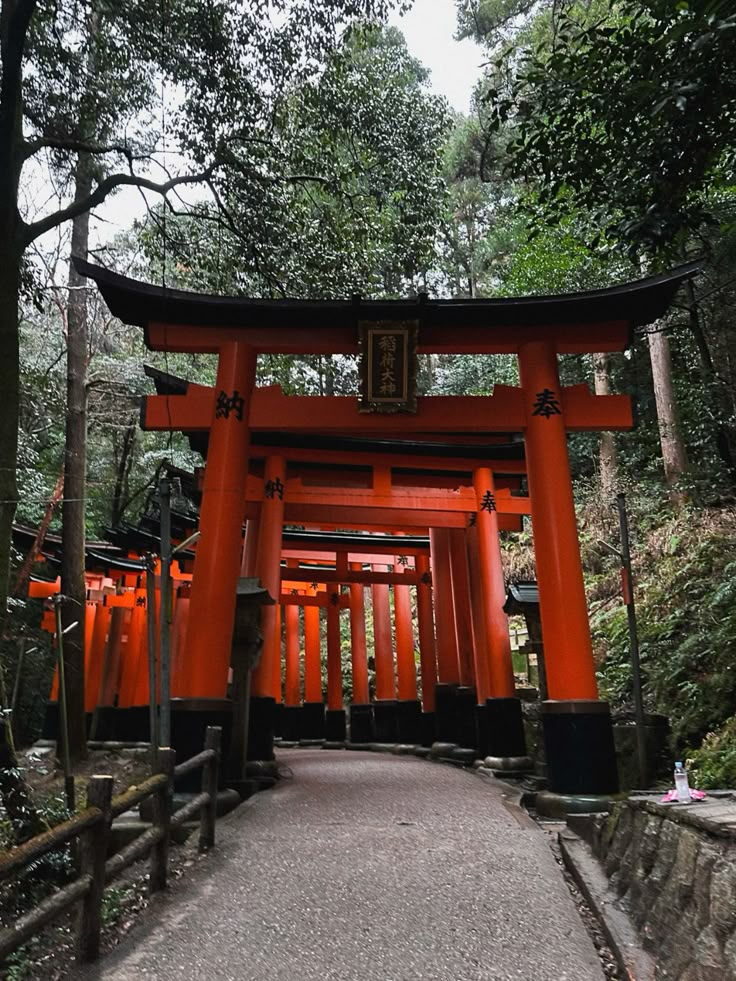
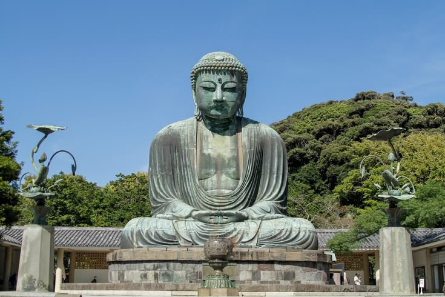
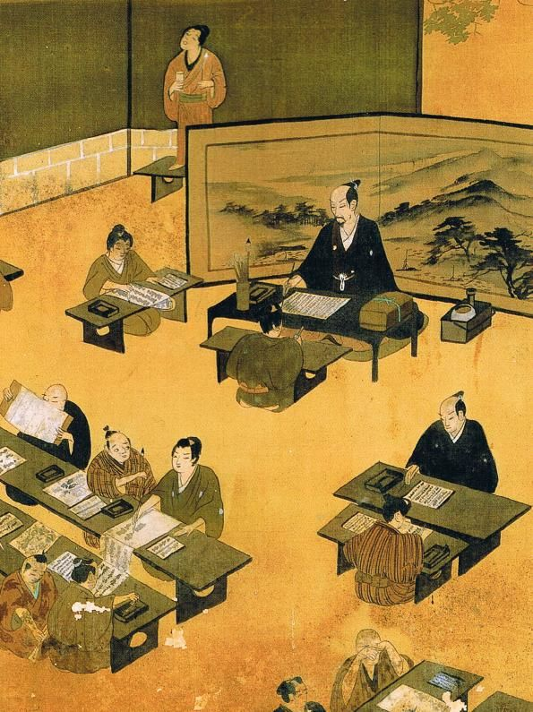
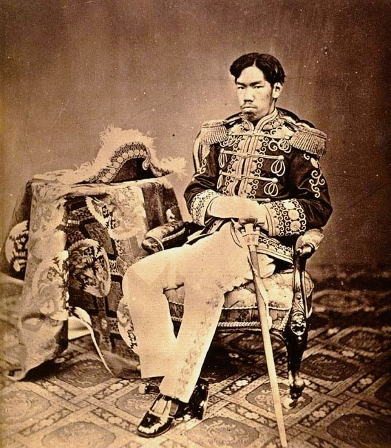

The history of philosophical thought in Japan — from early traditions
of kami and nature to Buddhist and Confucian philosophy, Zen,
Edo-period intellectual movements, and the modern encounter between
Japanese, East Asian, and Western philosophy.
Introduction
Japanese philosophy developed through a long history of intellectual
exchange, adaptation, and transformation. Rather than emerging as an
isolated tradition, philosophical thought in Japan was shaped by
encounters with Chinese and
Korean cultures,
Indian Buddhist traditions, and, in the
modern period,
European and American philosophy.
Ideas arriving from abroad were not simply copied unchanged. They were
interpreted within new social, religious, linguistic, and cultural
settings, producing philosophical traditions with distinctive Japanese
forms and concerns.
The earliest intellectual world of Japan cannot easily be separated into
the modern categories of philosophy, religion, mythology, and
literature. Traditions concerning kami, nature, ancestry,
ritual, purity, and communal life expressed fundamental ways of
understanding the relationship between human beings and the world. Later
traditions associated with Shinto developed alongside Buddhism and
Confucianism, creating an intellectual environment in which several
different accounts of reality, ethics, and human existence could coexist
and interact.
The arrival of Buddhism transformed Japanese intellectual history.
Buddhist ideas concerning impermanence, suffering, karma, enlightenment,
emptiness, and liberation introduced philosophical traditions whose
origins extended from India through China and Korea. Over time, Japanese
thinkers such as Saichō, Kūkai, Hōnen, Shinran, Dōgen, and Nichiren
developed influential interpretations of Buddhist thought. Their work
explored questions about language, consciousness, practice, reality,
death, awakening, and the possibility of liberation.
Japanese philosophy also underwent major transformations during the Edo
and modern periods. Neo-Confucian thinkers, scholars of
Kokugaku, and other intellectual movements debated ethics,
human nature, language, political order, and cultural tradition. After
the nineteenth-century encounter with modern Western philosophy,
Japanese thinkers began engaging systematically with concepts drawn from
German idealism, phenomenology, existentialism, pragmatism, and other
traditions. Figures such as Nishida Kitarō and the Kyoto School
attempted to create original philosophical systems through a critical
encounter between East Asian intellectual traditions and modern Western
thought.
This page follows that long development: from the early Japanese world
of kami, ritual, and nature to the arrival of Buddhism and Confucianism;
from the great Buddhist traditions of the classical and medieval periods
to Zen and the philosophy of Dōgen; from Edo-period debates about
ethics, language, and tradition to the modernization of Japanese
philosophy; and finally to the Kyoto School and its influential
explorations of experience, culture, religion, and nothingness.
Together, these traditions reveal philosophy in Japan as a continuing
process of dialogue between inherited worlds of thought and new
intellectual possibilities.
Timeline at a Glance
Before 6th century CE
Early Japanese traditions develop around kami, ritual, ancestry,
nature, community, and relationships between the human and sacred
worlds
6th–7th centuries
Buddhism and Confucian ideas enter Japan through the wider networks
of East Asian cultural exchange
8th–9th centuries
Nara Buddhist traditions flourish, followed by the establishment of
Tendai and Shingon Buddhism by Saichō and Kūkai
12th–13th centuries
New Buddhist movements develop, including Pure Land traditions, Zen,
and the teachings associated with Nichiren
1600–1868
Edo-period intellectual life produces major debates in
Neo-Confucianism, Kokugaku, ethics, language, education, and
political order
Late 19th–20th centuries
Japanese philosophers engage systematically with Western philosophy,
leading to the emergence of modern Japanese philosophy and the Kyoto
School
🏯 The Formation of a Japanese Intellectual World
The Japanese archipelago developed its intellectual traditions within a
larger East Asian world rather than in complete isolation. For
centuries, Japan maintained important cultural relationships with the
Korean peninsula and China, while Buddhism connected Japanese thinkers
indirectly with the philosophical traditions of India. Writing systems,
political institutions, religious texts, artistic forms, and systems of
learning entered Japan through these networks of exchange. Japanese
intellectual history therefore cannot be understood simply as the story
of an isolated national tradition.
At the same time, ideas received from abroad were repeatedly adapted to
Japanese circumstances. Buddhism, for example, arrived through
traditions already transformed in China and Korea before developing
further in Japan. Confucian ethical and political thought likewise
entered a society with its own institutions, social structures, and
religious practices. Japanese thinkers therefore often worked through
processes of interpretation rather than simple acceptance, asking how
inherited concepts could be understood within new cultural and
historical conditions.
The modern category of "Japanese philosophy" must also be used
carefully. For much of Japanese history, thinkers did not necessarily
distinguish philosophy from religion, ethics, politics, literature,
aesthetics, or spiritual practice in the way modern universities often
do. Buddhist monks could be philosophers, religious teachers, poets, and
institutional leaders at the same time. Confucian scholars discussed
moral cultivation alongside political administration, while aesthetic
practices raised questions about perception, experience, nature, and the
meaning of human existence.
A major transformation occurred during the modern period, when the
Western academic category of philosophy was introduced and the Japanese
term
tetsugaku became associated with the systematic study of
philosophy. Yet modern Japanese philosophers did not simply abandon
older traditions. Many attempted to place Buddhist, Confucian,
aesthetic, and other East Asian forms of thought into dialogue with
modern philosophy. This continuing encounter between traditions became
one of the defining characteristics of Japanese philosophical history.
1️⃣ Kami, Nature & the Early Japanese World
Before Philosophy Became a Separate Discipline

Early Japanese traditions understood human life through relationships
involving kami, ancestors, places, natural forces, ritual, and
community.
Before the arrival of Buddhism and the development of formal systems of
learning, the peoples of the Japanese archipelago already possessed
complex traditions for understanding the human relationship with nature
and the sacred. Later Japanese sources describe a world inhabited by
kami, a term that cannot be translated simply as "gods." Kami
could be associated with natural forces, places, ancestors,
extraordinary beings, and other forms of sacred presence. These
traditions encouraged ways of thinking in which human beings existed
within, rather than entirely apart from, a larger living and sacred
environment.
Early Japanese thought was strongly expressed through ritual, story,
poetry, and communal practice. Texts such as the Kojiki and
Nihon Shoki, compiled in the early eighth century, preserve
myths and genealogies that became important to later understandings of
the origins of the world, the Japanese islands, and political authority.
These works should not simply be treated as philosophical treatises, but
they contain ideas about order, origin, relationship, mortality, and
humanity's place within a world larger than individual human control.
One important feature of these traditions is the difficulty of
separating nature from culture and religion from ordinary life.
Mountains, forests, rivers, agricultural cycles, and particular places
could possess sacred significance. Human flourishing depended upon
maintaining relationships within families, communities, and the wider
natural world. Later philosophical and religious traditions would
develop much more systematic theories, but this early emphasis on
relationship and place remained an important background for Japanese
ways of understanding human existence.
It is therefore misleading to describe early Japanese thought either as
"primitive philosophy" or as a complete philosophical system comparable
to later Buddhist or modern academic traditions. Its importance lies in
the conceptual world it provided. Questions concerning nature,
sacredness, purity, community, ancestry, and the relationship between
human beings and their environment continued to interact with Buddhist,
Confucian, and modern philosophical ideas throughout Japanese history.
2️⃣ Buddhism, Confucianism & the Transformation of Thought
Japan Enters the East Asian Intellectual World

The arrival of Buddhism connected Japan with philosophical traditions
that had developed across India, Central Asia, China, and Korea.
The introduction of Buddhism was one of the decisive events in Japanese
intellectual history. Buddhism entered Japan during the sixth century
through contacts with the Korean peninsula, bringing scriptures, images,
rituals, institutions, and philosophical ideas that had traveled across
Asia for centuries. Its arrival did not immediately replace existing
traditions. Instead, Japanese society gradually developed new
relationships between Buddhist teachings, indigenous practices,
political authority, and the institutions of the developing state.
Buddhist philosophy introduced a radically expanded vocabulary for
thinking about existence. Concepts such as impermanence, suffering,
karma, rebirth, enlightenment, emptiness, and dependent origination
encouraged reflection on the instability of ordinary human experience.
The Buddhist analysis of the self was particularly important: rather
than assuming an eternal and independent individual essence, many
Buddhist traditions investigated the changing processes through which
the experience of personhood is produced.
Confucian ideas also became important within Japan through the
transmission of Chinese texts and institutions. Confucian thought
emphasized ethical cultivation, learning, family relationships,
political responsibility, and the formation of social order. Its
philosophical questions differed in emphasis from those of Buddhist
traditions. Rather than focusing primarily on liberation from the cycle
of suffering, Confucian thinkers often asked how human beings could
cultivate virtue and contribute to a harmonious and well-ordered
society.
The coexistence of these traditions created a complex intellectual
environment. Buddhism offered theories about consciousness, suffering,
and awakening; Confucianism developed accounts of ethics, education, and
social responsibility; and traditions associated with kami continued to
shape ritual and cultural life. Japanese philosophy would develop
through the interaction of these perspectives rather than through the
dominance of a single intellectual system.
3️⃣ Kūkai, Saichō & the Great Buddhist Traditions
Language, Mind, and the Possibility of Enlightenment
Kūkai became one of the most important systematic thinkers of
premodern Japan through his development of Shingon Buddhist
philosophy.
During the late eighth and early ninth centuries, Japanese Buddhist
thought entered a new period of development. Saichō founded the Tendai
tradition on Mount Hiei, while Kūkai established the foundations of
Shingon Buddhism. Both traditions drew upon forms of Buddhism that had
developed in China, yet they became major and distinctive institutions
within Japanese intellectual history. Their influence extended far
beyond narrowly religious questions, shaping later debates about
enlightenment, language, ritual, and the nature of reality.
Kūkai was especially important for the philosophical sophistication of
his thought. His writings explored the relationship between language,
symbols, consciousness, and enlightenment. In his account of Buddhist
practice, awakening was not understood merely as the acceptance of an
abstract theory. Sound, speech, writing, bodily action, ritual, and
meditation could all participate in the transformation of human
awareness. This gave language and symbolic activity a philosophical
importance that extended beyond the simple communication of already
completed ideas.
Shingon thought also developed a distinctive account of the relationship
between the ordinary world and enlightenment. Rather than treating
ultimate reality as something located completely outside lived
experience, esoteric Buddhist practice explored how enlightenment could
be expressed through body, speech, and mind. Ritual therefore possessed
an intellectual as well as religious significance: practice could
transform the way reality itself was experienced and understood.
Tendai Buddhism likewise became enormously influential because of its
broad and inclusive approach to Buddhist teachings. Japanese Buddhist
thinkers inherited an enormous diversity of scriptures and philosophical
traditions, often containing apparently different accounts of the path
to awakening. The challenge was therefore interpretive as well as
religious: how could these teachings be organized, compared, and
understood as parts of a larger intellectual whole?
These traditions established foundations for much of later Japanese
Buddhist philosophy. Medieval movements including Pure Land, Zen, and
Nichiren Buddhism emerged partly through debates about which teachings
and practices were most appropriate for human beings in their historical
circumstances. The philosophical history of Japanese Buddhism was
therefore not simply a repetition of inherited doctrine, but an ongoing
argument about practice, knowledge, language, reality, and the
possibility of enlightenment.
4️⃣ Zen & the Question of Awakening
Dōgen and the Philosophy of Practice
Dōgen developed one of the most influential philosophical accounts of
practice, time, being, and awakening in the history of Japanese
thought.
Zen Buddhism became one of the most internationally recognized Japanese
intellectual traditions, although it represents only one part of the
wider history of Japanese philosophy. Zen emphasized direct practice,
meditation, discipline, and awakening, while also questioning the limits
of purely conceptual understanding. Its development in Japan was
connected with Chinese Chan Buddhism, but Japanese Zen traditions
eventually developed distinctive institutions, practices, and
philosophical expressions.
Dōgen, the founder of the Japanese Sōtō Zen tradition, became one of the
most important philosophers of medieval Japan. His major collection of
writings, the Shōbōgenzō, explores a remarkable range of
questions concerning being, time, practice, language, nature, and
enlightenment. Dōgen rejected the idea that philosophical understanding
and religious practice could be completely separated. For him, the
transformation of human existence required practice rather than the mere
possession of theoretical knowledge.
One of Dōgen's most influential ideas concerns the relationship between
practice and enlightenment. It is tempting to imagine enlightenment as a
distant goal achieved only after a long process of practice. Dōgen
complicated this simple division by arguing that authentic practice is
not merely a means toward awakening but an expression of awakening
itself. Meditation therefore becomes philosophically significant as a
way of questioning the ordinary distinction between the path and its
destination.
Dōgen also developed profound reflections on time and existence. Human
beings often experience time as something that passes independently of
themselves, dividing life into past, present, and future. Dōgen's
writings challenged overly simple accounts of this relationship,
exploring the idea that existence and temporality cannot be understood
as entirely separate. Every being exists in time, yet time is not merely
an external container in which things happen.
Zen philosophy also raised difficult questions about language. If
awakening cannot be reduced to a concept, what role can words and
philosophical texts play? Zen traditions sometimes criticized attachment
to language and doctrine, but they also produced enormous bodies of
literature and highly sophisticated philosophical reflection. The
resulting tension became productive rather than simply contradictory:
language may be limited, yet the recognition of those limits can itself
become part of philosophical inquiry.
5️⃣ Pure Land, Shinran & Nichiren
Philosophy, Faith, and the Problem of Human Limitation
Medieval Japanese Buddhism was far more diverse than the history of Zen
alone suggests. During the twelfth and thirteenth centuries, new
movements developed in response to major social and religious changes.
Many thinkers questioned whether the demanding forms of monastic
practice inherited from earlier Buddhist institutions were equally
accessible to all human beings. The problem was therefore philosophical
as well as religious: if human beings are deeply limited by ignorance,
desire, and historical conditions, what kind of path to liberation can
genuinely be available to them?
Hōnen became one of the most influential figures in the development of
Japanese Pure Land Buddhism. Drawing upon traditions centered on
Amitābha, or Amida Buddha, he emphasized the practice of calling upon
Amida as a path open beyond the narrow boundaries of elite monastic
learning. His teaching challenged assumptions about religious authority
by placing extraordinary importance on a practice that could be
undertaken by ordinary people living within the difficulties of everyday
life.
Shinran developed Pure Land thought in an even more radical direction.
He emphasized the limitations of human self-power and the importance of
other-power, the liberating activity associated with Amida
Buddha. This perspective raised profound questions about the nature of
agency and achievement. If the human ego is itself shaped by ignorance
and attachment, can liberation simply be understood as something
produced through individual effort? Shinran's thought therefore
challenged simple oppositions between action and dependence, discipline
and grace, or religious practice and ordinary life.
Nichiren developed another powerful response to the Buddhist diversity
of medieval Japan. He argued for the supreme importance of the
Lotus Sūtra and understood the correct teaching as having
urgent consequences for both individual and collective life. His
philosophy joined questions of salvation with questions about society,
history, and political responsibility. Religious truth, in this view,
was not merely a private matter but something connected with the
condition and future of the wider community.
Together, Pure Land and Nichiren traditions demonstrate the diversity of
Japanese philosophical and religious thought. They explored questions
that continue to possess philosophical force: How much control does an
individual possess over transformation? What does it mean to acknowledge
one's own limitations? Can ordinary life itself become a site of
awakening? And how should ultimate truth relate to social and political
responsibility? Medieval Japanese thought offered several competing
answers rather than one unified Buddhist philosophy.
6️⃣ Edo Philosophy: Neo-Confucianism & Kokugaku
Ethics, Language, and the Search for an Intellectual Tradition

The Edo period became one of the great ages of Japanese intellectual
debate, producing new arguments about ethics, education, language,
political order, and cultural tradition.
The Edo period, lasting from the early seventeenth century until 1868,
produced an unusually rich intellectual environment. Long periods of
internal peace allowed scholarship, publishing, education, and debate to
expand across different parts of society. Neo-Confucian thought became
particularly important in discussions of ethics and political order, but
it existed alongside Buddhist scholarship, Shinto thought, classical
learning, popular education, and other intellectual traditions. Japanese
philosophy during this period cannot therefore be reduced to a single
official doctrine.
Neo-Confucian thinkers inherited philosophical traditions that had
developed in China, especially those associated with Zhu Xi. They
investigated the relationship between principle, material reality, human
nature, emotion, moral cultivation, and political order. Education was
understood as more than the acquisition of information: it was a process
through which the individual could cultivate character and learn to act
responsibly within family and society. These questions gave ethics a
central position within Edo intellectual life.
Japanese Confucian thinkers also criticized and reinterpreted inherited
traditions. Itō Jinsai emphasized a return to earlier Confucian texts
and developed influential arguments about human relationships, ethical
life, and the meanings of classical concepts. Ogyū Sorai likewise
challenged aspects of dominant Neo-Confucian interpretation, placing
greater emphasis on historical institutions, language, and the concrete
practices through which social order is created. Their disagreements
reveal that Japanese Confucianism was an active field of philosophical
argument rather than a passive reproduction of Chinese doctrine.
Another important movement was Kokugaku, often translated as
National Learning. Scholars associated with this tradition returned to
ancient Japanese texts in an effort to understand earlier language,
literature, and cultural forms on their own terms. Motoori Norinaga
became especially influential through his interpretation of the
Kojiki and his reflections on human feeling, language, and the
distinctive character of Japanese classical literature. Kokugaku
thinkers often criticized what they regarded as excessive dependence on
imported Chinese intellectual categories.
The philosophical importance of the Edo period lies partly in these
debates about interpretation itself. Can a culture understand its own
past through concepts inherited from another civilization? Does moral
truth arise from universal principles, historical traditions, or
concrete human relationships? How does language shape what human beings
are capable of understanding? By the end of the Edo period, Japanese
thinkers had created a complex intellectual world whose arguments would
continue into the period of rapid modernization that followed.
7️⃣ Modern Japan & the Encounter with Western Philosophy
What Does It Mean to Create Modern Philosophy?

The modern transformation of Japan brought European and American
philosophy into direct conversation with older Japanese and East Asian
intellectual traditions.
The Meiji Restoration of 1868 transformed Japan's political,
educational, and intellectual institutions. Japanese scholars
encountered Western philosophy on a scale and with an intensity unlike
anything in earlier history. Works associated with British empiricism,
German idealism, utilitarianism, positivism, Christianity, and later
phenomenology and existentialism entered Japanese intellectual life
through translation, education, and direct study abroad. The encounter
raised a fundamental question: how could philosophy be translated into a
society whose intellectual traditions had developed through very
different historical categories?
During this period, the modern Japanese term tetsugaku became
established as the translation of "philosophy." The creation and
adoption of this vocabulary was itself philosophically significant.
Translation does not simply transfer words from one language into
another; it can reshape the conceptual boundaries through which a
tradition understands itself. The emergence of philosophy as a modern
academic discipline therefore encouraged Japanese thinkers to reconsider
Buddhism, Confucianism, ethics, religion, aesthetics, and older
intellectual traditions in relation to a new global category of
philosophical inquiry.
Modern Japanese thinkers did not respond to Western philosophy in a
single way. Some concentrated on introducing European concepts into
Japanese education, while others attempted to identify distinctive
intellectual resources within Japanese and East Asian traditions. The
resulting debates concerned individual freedom, scientific knowledge,
religion, morality, national identity, modernization, and the
relationship between universal philosophical claims and particular
cultural histories.
The encounter with Western thought also produced difficult political
questions. Modernization occurred alongside the growth of the Japanese
nation-state, imperial expansion, and eventually war. Philosophers and
intellectuals therefore faced questions that could not be treated as
purely abstract: What is the relationship between the individual and the
nation? Can philosophy remain independent from political power? Is
modernization equivalent to Westernization, or can different
intellectual traditions participate equally in the creation of modern
thought?
By the early twentieth century, philosophy had become firmly established
within Japanese universities, but the most original thinkers
increasingly attempted to move beyond simple imitation. They engaged
critically with Kant, Hegel, William James, Bergson, Husserl, Heidegger,
and other Western philosophers while drawing upon Buddhist and East
Asian traditions. Out of this intellectual environment emerged some of
the most internationally significant philosophical movements in modern
Japan, most famously the Kyoto School.
:contentReference[oaicite:1]{index=1}
8️⃣ Nishida Kitarō & the Kyoto School
Experience, Nothingness, and the Modern Philosophical World
Nishida Kitarō became the central figure in the development of the
Kyoto School and one of the most influential Japanese philosophers of
the twentieth century.
Nishida Kitarō became one of the most important philosophers in the
history of modern Japan. Educated during a period of rapid intellectual
transformation, he studied major Western philosophical traditions while
also engaging deeply with Zen practice and East Asian thought. His work
did not simply attempt to combine "Eastern" and "Western" ideas into a
single collection. Instead, Nishida sought to develop philosophical
concepts capable of addressing fundamental questions about experience,
consciousness, logic, the self, and the world.
:contentReference[oaicite:2]{index=2}
In his early philosophy, especially in
An Inquiry into the Good, Nishida developed the influential
idea of pure experience. The concept attempted to describe
experience prior to the ordinary division between a knowing subject and
an object known by that subject. Nishida's philosophical project was not
a rejection of rational thought, but an effort to investigate the
experiential conditions from which distinctions between self and world,
thought and object, could emerge. :contentReference[oaicite:3]{index=3}
Nishida later developed his philosophy of basho, often
translated as "place." This became connected with his exploration of
absolute nothingness, a concept that should not be understood simply as
empty space or the complete absence of everything. Nishida used it to
investigate the conditions within which things, selves, relations, and
concepts can appear without treating ultimate reality as merely one more
object among other objects. His philosophy therefore challenged simple
forms of both individualism and metaphysical substance-thinking.
:contentReference[oaicite:4]{index=4}
Thinkers influenced by or associated with Nishida became known as the
Kyoto School, although the boundaries of the school remain debated.
Important figures included Tanabe Hajime and Nishitani Keiji, along with
a wider circle of philosophers who developed different and sometimes
critical responses to Nishida's work. Their thought explored themes
including absolute nothingness, self-negation, history, culture,
religion, science, and the relationship between self and other. The
Kyoto School was therefore not a single doctrine but a continuing
philosophical conversation. :contentReference[oaicite:5]{index=5}
The Kyoto School also remains historically controversial because some of
its members wrote about nation, culture, war, and political order during
Japan's imperial period. Scholars continue to debate the relationship
between their philosophical concepts and their political writings,
making this history an important reminder that philosophy does not exist
outside historical circumstances. At the same time, Nishida and other
Kyoto School thinkers made lasting contributions to cross-cultural
philosophy by challenging the assumption that modern philosophy must
develop exclusively within a European intellectual framework.
:contentReference[oaicite:6]{index=6}
👤 Major Thinkers
Japanese philosophy developed through the work of Buddhist teachers,
Confucian scholars, Shinto thinkers, Zen masters, and modern
philosophers. These figures represent only part of a much broader
intellectual tradition, but their ideas became especially influential in
the history of Japanese thought.
Prince Shōtoku
574–622
Traditionally associated with the early political and intellectual
development of Buddhism and Confucian ideas within the Japanese
state.
Kūkai
774–835
Founder of the Japanese Shingon tradition and a major thinker on
language, enlightenment, ritual, and the relationship between mind
and reality.
Saichō
767–822
Founder of the Japanese Tendai tradition, which became an important
center of Buddhist learning and philosophical development.
Hōnen
1133–1212
A major Pure Land Buddhist teacher who emphasized devotion to Amida
Buddha and opened new questions about salvation and religious
practice.
Dōgen
1200–1253
Founder of the Japanese Sōtō Zen tradition and one of Japan's
greatest philosophical writers, known for reflections on being,
time, practice, and enlightenment.
Nishida Kitarō
1870–1945
Founder of the Kyoto School and a major modern philosopher whose
work attempted to develop philosophical ideas through dialogue with
both Japanese traditions and Western philosophy.
Nishitani Keiji
1900–1990
A Kyoto School philosopher who explored nihilism, emptiness,
religion, and the possibility of overcoming the alienation
associated with modern existence.
⛩️ Harmony and Relationship — understanding human
life through relationships with other people, nature, society, and the
sacred
🌿 Impermanence — the recognition that all
conditioned things change and that human existence is marked by
transience
🧘 Zen Practice — the pursuit of awakening through
disciplined practice rather than intellectual theory alone
🌌 Emptiness — the Buddhist exploration of the
absence of fixed and independent existence
⏳ Being and Time — Dōgen's reflections on existence,
temporality, and the inseparability of being from time
🏯 Self-Cultivation — the transformation of character
through education, discipline, ritual, meditation, and ethical
practice
🌸 Mono no Aware — sensitivity to the transience and
passing beauty of the world
🪨 Nothingness — modern Japanese philosophical
investigations into the meaning of nothingness and the limits of the
individual self
🤝 Individual and Community — reflection on the
tension and relationship between personal existence and social
responsibility
🌍 Dialogue Between Traditions — modern efforts to
bring Buddhist and Japanese concepts into conversation with Western
philosophy
🌍 Influence on Later Philosophy
Japanese philosophy developed through a long process of exchange with
the wider intellectual traditions of East Asia. Buddhism entered Japan
through the Korean peninsula and brought with it centuries of
philosophical reflection that had developed in India, Central Asia,
China, and Korea. Confucian ideas likewise became important to Japanese
political and ethical thought, while indigenous Shinto traditions
continued to shape Japanese understandings of nature, community, ritual,
and the sacred. Japanese philosophy was therefore never an isolated
tradition but part of a larger network of intellectual exchange.
Zen Buddhism became one of Japan's most internationally influential
philosophical and religious traditions. The writings of Dōgen, together
with later Zen teachers and institutions, developed distinctive
approaches to meditation, practice, language, consciousness, and
enlightenment. Zen ideas later attracted considerable attention outside
Japan, especially during the modern period, although the transmission of
Zen to Western audiences often involved reinterpretation and
simplification.
Modern Japanese philosophy created new forms of dialogue between Asian
and European intellectual traditions. The Kyoto School, particularly
through philosophers such as Nishida Kitarō and Nishitani Keiji, engaged
with Western thinkers including Kant, Hegel, Nietzsche, and Heidegger
while developing philosophical accounts of experience, selfhood,
nothingness, and religion. Their work demonstrated that modern
philosophy could not be understood solely as a European conversation.
Japanese philosophical traditions continue to influence contemporary
discussions of consciousness, environmental thought, aesthetics,
religion, ethics, and the philosophy of existence. Concepts associated
with Zen, Buddhism, Japanese aesthetics, and the Kyoto School have
entered global philosophical conversations, sometimes through careful
scholarship and sometimes through popular reinterpretation. Their
lasting importance lies not in providing a single "Japanese philosophy,"
but in preserving a rich plurality of ways of thinking about self,
world, nature, impermanence, and meaning.
📊 Quick Facts
Time Period: From ancient Japanese traditions to
contemporary philosophy
Key Region: Japan, within the wider intellectual
world of East Asia
Major Traditions: Shinto thought, Buddhist
philosophy, Zen, Pure Land Buddhism, Confucian thought, and modern
Japanese philosophy
Major Figures: Prince Shōtoku, Kūkai, Saichō, Hōnen,
Dōgen, Nishida Kitarō, and Nishitani Keiji
Central Questions: What is the nature of the self?
How should one live? What does impermanence reveal about existence?
What is enlightenment, and how is it realized?
Major Themes: Impermanence, emptiness, practice,
harmony, self-cultivation, nature, aesthetics, being, time, and
nothingness
While Japanese philosophy developed through the interaction of
indigenous traditions with Buddhism, Confucianism, and other currents
from East Asia, the Korean peninsula was also producing its own
distinctive intellectual traditions. Korean thinkers engaged deeply with
Buddhism and Confucianism while developing important debates about
metaphysics, human nature, ethics, education, political order, and
spiritual cultivation.